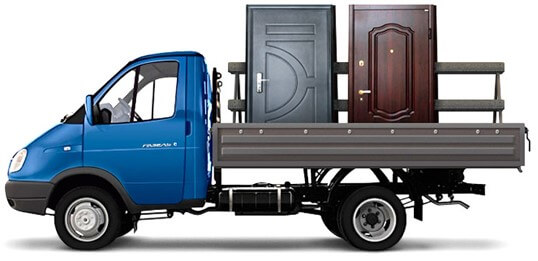

<div class="delivery">
    <div class="container-fluid">

        @@include("../breadcrumb/breadcrumb.html")

        <h1 class="h1 mb-4">Доставка и оплата</h1>

        <h4 class="h4 text-main mb-3">
            Порядок оплаты
        </h4>
        <p>
            Расчет за товар выполняется в российских рублях. Мы предлагаем несколько способов оплаты:
        </p>
        <p class="pl-3">
            • <b>Наличными.</b> Оплату за товар принимает доставивший его вам водитель-экспедитор. Что касается заказных
            моделей, то при заключении договора на их изготовление мы требуем внесения предоплаты в размере 60% от суммы
            заказа. Срок его исполнения составляет от 5 до 30 рабочих дней. Окончательный расчет – по факту получения.
        </p>
        <p class="pl-3">
            • <b>Банковской картой</b> или <b>онлайн переводом</b> на наш счет.
        </p>
        <p class="pl-3">
            • <b>Безналичный расчет</b> при сотрудничестве с юридическими лицами-компаниями.
        </p>
        <p class="h5">Хороших покупок, вам, друзья и отличного настроения!</p>
        <h4 class="h4 text-main mt-4 mb-3">Для межкомнатных дверей действуют следующие цены:</h4>
        <p class="pl-3">
            • подъем одной двери в домах с лифтом - <b>150 рублей;</b>
        </p>
        <p class="pl-3">
            • подъем одной двери в домах, где лифт отсутствует или неисправен - <b>150 рублей за этаж.</b>
        </p>
        <h4 class="h4 text-main mt-4 mb-3">Для металлической двери действуют следующие цены:</h4>
        <p class="pl-3">
            • подъем в доме с грузовым лифтом стоит <b>700 рублей;</b>
        </p>
        <p class="pl-3">
            • в доме без грузового лифта для двери весом больше 81 кг - <b>500 рублей за этаж.</b>
        </p>
        <h4 class="h4 text-main mt-4 mb-3">Время и стоимость доставки:</h4>
        <p>
            Мы производим доставку дверей в дневное время <b>(с 14:00 до 18:00)</b> и в вечерние часы
            <b>(с 18:00 до 22:00)</b>. Поэтому независимо от графика работы и других планов, у вас не возникнет проблем
            с тем, чтобы получить купленные двери в наиболее удобное время. Цена доставки также приятно удивляет:
        </p>
        <p class="pl-3">
            • если вы закажете доставку в пределах МКАД, то заплатить придется <b>1200 рублей;</b>
        </p>
        <p class="pl-3">
            • если за пределы МКАД, то <b>1000 рублей</b> и дополнительно <b>35 рублей за каждый километр</b> от МКАД.
        </p>
        <p>Эта стоимость включает только доставку до подъезда, а подъем на этаж рассчитывается по-другому.</p>
        <p>
            Максимальная стоимость доставки по Московской области <b>3000 руб</b>, в зависимости километража от МКАД.
        </p>
        <p>
            <b>В воскресенье доставка не осуществляется!</b>
        </p>

        <div class="row mt-4">
            <div class="col-lg-7">
                <p>
                    Мы позаботились о том, чтобы вы не только могли приобрести качественные красивые двери, но и
                    получили их как можно быстрее. Кроме того, оформить доставку можно на любое удобное для вас время и
                    даже на выходные дни. Наши сотрудники обеспечивают бережную аккуратную доставку дверей заказчику
                    ровно в назначенное время, что позволяет, без лишних рисков, быстро получить свою покупку.
                </p>
                <p>
                    Сделав заказ у нас, вы можете не волноваться о доставке и больших расходах, которые она за собой
                    повлечет. <b>Мы быстро и недорого доставим купленные двери</b>, чтобы вы могли как можно быстрее
                    начать получать удовольствие от их использования.
                </p>
            </div>
            <div class="col-lg-5">
                
            </div>
        </div>
        <!-- /.row -->

    </div>
    <!-- /.container-fluid -->
</div>
<!-- /.delivery -->